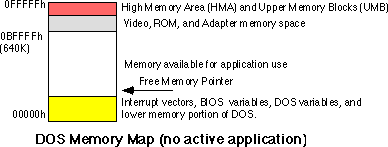
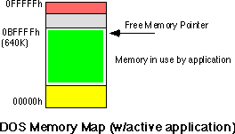
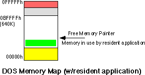
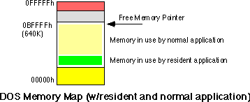

| Table of Content | Chapter Eighteen
(Part 2) |
|
| Table of Content | Chapter Eighteen
(Part 2) |
|
| CHAPTER
EIGHTEEN: RESIDENT PROGRAMS (Part 1) |
||
| 18.1 -
DOS Memory Usage and TSRs 18.2 - Active vs. Passive TSRs 18.3 - Reentrancy 18.3.1 - Reentrancy Problems with DOS 18.3.2 - Reentrancy Problems with BIOS 18.3.3 - Reentrancy Problems with Other Code 18.4 - The Multiplex Interrupt (INT 2Fh) 18.5 - Installing a TSR 18.6 - Removing a TSR 18.7 - Other DOS Related Issues 18.8 - A Keyboard Monitor TSR 18.9 - Semiresident Programs |
Copyright 1996 by Randall Hyde
All rights reserved. Duplication other than for immediate display through a browser is prohibited by U.S. Copyright Law. This material is provided on-line as a beta-test of this text. It is for the personal use of the reader only. If you are interested in using this material as part of a course, please contact rhyde@cs.ucr.edu Supporting software and other materials are available via anonymous ftp from ftp.cs.ucr.edu. See the "/pub/pc/ibmpcdir" directory for details. You may also download the material from "Randall Hyde's Assembly Language Page" at URL: http://webster.ucr.edu Notes: This document does not contain the laboratory exercises, programming assignments, exercises, or chapter summary. These portions were omitted for several reasons: either they wouldn't format properly, they contained hyperlinks that were too much work to resolve, they were under constant revision, or they were not included for security reasons. Such omission should have very little impact on the reader interested in learning this material or evaluating this document. This document was prepared using Harlequin's Web Maker 2.2 and Quadralay's Webworks Publisher. Since HTML does not support the rich formatting options available in Framemaker, this document is only an approximation of the actual chapter from the textbook. If you are absolutely dying to get your hands on a version other than HTML, you might consider having the UCR Printing a Reprographics Department run you off a copy on their Xerox machines. For details, please read the following EMAIL message I received from the Printing and Reprographics Department:
We are currently working on ways to publish this text in a form other than HTML (e.g., Postscript, PDF, Frameviewer, hard copy, etc.). This, however, is a low-priority project. Please do not contact Randall Hyde concerning this effort. When something happens, an announcement will appear on "Randall Hyde's Assembly Language Page." Please visit this WEB site at http://webster.ucr.edu for the latest scoop. Redesigned 10/2000 with "MS FrontPage 98" using
17" monitor 1024x768 |
|
Most MS-DOS applications are transient. They load into memory, execute, terminate, and DOS uses the memory allocated to the application for the next program the user executes. Resident programs follow these same rules, except for the last. A resident program, upon termination, does not return all memory back to DOS. Instead, a portion of the program remains resident, ready to be reactivated by some other program at a future time.
Resident programs, also known as terminate and stay resident programs or TSRs, provide a tiny amount of multitasking to an otherwise single tasking operating system. Until Microsoft Windows became popular, resident programs were the most popular way to allow multiple applications to coexist in memory at one time. Although Windows has diminished the need for TSRs for background processing, TSRs are still valuable for writing device drivers, antiviral tools, and program patches. This chapter will discuss the issues you must deal with when writing resident programs.
When you first boot DOS, the memory layout will look something like the following:

DOS maintains a free memory pointer that points the the beginning of the block of free memory. When the user runs an application program, DOS loads this application starting at the address the free memory pointer contains. Since DOS generally runs only a single application at a time, all the memory from the free memory pointer to the end of RAM (0BFFFFh) is available for the application's use:

When the program terminates normally via DOS function 4Ch
(the Standard Library exitpgm macro), MS-DOS reclaims the memory in use by
the application and resets the free memory pointer to just above DOS in low memory.
MS-DOS provides a second termination call which is
identical to the terminate call with one exception, it does not reset the free memory
pointer to reclaim all the memory in use by the application. Instead, this terminate and
stay resident call frees all but a specified block of memory. The TSR call (ah=31h)
requires two parameters, a process termination code in the al register
(usually zero) and dx must contain the size of the memory block to protect,
in paragraphs. When DOS executes this code, it adjusts the free memory pointer so that it
points at a location dx*16 bytes above the program's PSP. This leaves memory looking like
this:

When the user executes a new application, DOS loads it into memory at the new free memory pointer address, protecting the resident program in memory:

When this new application terminates, DOS reclaims its memory and readjusts the free memory pointer to its location before running the application - just above the resident program. By using this free memory pointer scheme, DOS can protect the memory in use by the resident program.
The trick to using the terminate and stay resident call is to figure out how many paragraphs should remain resident. Most TSRs contain two sections of code: a resident portion and a transient portion. The transient portion is the data, main program, and support routines that execute when you run the program from the command line. This code will probably never execute again. Therefore, you should not leave it in memory when your program terminates. After all, every byte consumed by the TSR program is one less byte available to other application programs.
The resident portion of the program is the code that remains in memory and provides whatever functions are necessary of the TSR. Since the PSP is usually right before the first byte of program code, to effectively use the DOS TSR call, your program must be organized as follows:

To use TSRs effectively, you need to organize your code and data so that the resident portions of your program loads into lower memory addresses and the transient portions load into the higher memory addresses. MASM and the Microsoft Linker both provide facilities that let you control the loading order of segments within your code. The simple solution, however, is to put all your resident code and data in a single segment and make sure that this segment appears first in every source module of your program. In particular, if you are using the UCR Standard Library SHELL.ASM file, you must make sure that you define your resident segments before the include directives for the standard library files. Otherwise MS-DOS will load all the standard library routines before your resident segment and that would waste considerable memory. Note that you only need to define your resident segment first, you do not have to place all the resident code and data before the includes. The following will work just fine:
ResidentSeg segment para public 'resident' ResidentSeg ends
EndResident segment para public 'EndRes' EndResident ends
.xlist
include stdlib.a
includelib stdlib.lib
.list
ResidentSeg segment para public 'resident'
assume cs:ResidentSeg, ds:ResidentSeg
PSP word ? ;This var must be here!
; Put resident code and data here
ResidentSeg ends
dseg segment para public 'data'
; Put transient data here
dseg ends
cseg segment para public 'code'
assume cs:cseg, ds:dseg
; Put Transient code here.
cseg ends
etc.
The purpose of the EndResident segment will
become clear in a moment. For more information on DOS memory ordering, see Chapter Six.
Now the only problem is to figure out the size of the resident code, in paragraphs. With your code structured in the manner shown above, determining the size of the resident program is quite easy, just use the following statements to terminate the transient portion of your code (in cseg):
mov ax, ResidentSeg ;Need access to ResidentSeg
mov es, ax
mov ah, 62h ;DOS Get PSP call.
int 21h
mov es:PSP, bx ;Save PSP value in PSP variable.
; The following code computes the sixe of the resident portion of the code. ; The EndResident segment is the first segment in memory after resident code. ; The program's PSP value is the segment address of the start of the resident ; block. By computing EndResident-PSP we compute the size of the resident ; portion in paragraphs.
mov dx, EndResident ;Get EndResident segment address.
sub dx, bx ;Subtract PSP.
; Okay, execute the TSR call, preserving only the resident code.
mov ax, 3100h ;AH=31h (TSR), AL=0 (return code).
int 21h
Executing the code above returns control to MS-DOS, preserving your resident code in memory.
There is one final memory management detail to consider
before moving on to other topics related to resident programs - accessing data within an
resident program. Procedures within a resident program become active in response to a
direct call from some other program or a hardware interrupt (see the next section). Upon
entry, the resident routine may specify that certain registers contain various parameters,
but one thing you cannot expect is for the calling code to properly set up the segment
registers for you. Indeed, the only segment register that will contain a meaningful value
(to the resident code) is the code segment register. Since many resident functions will
want to access local data, this means that those functions may need to set up ds
or some other segment register(s) upon initial entry. For example, suppose you have a
function, count, that simply counts the number of times some other code calls it once it
has gone resident. One would thing that the body of this function would contain a single
instruction: inc counter. Unfortunately, such an instruction would increment
the variable at counter's offset in the current data segment (that is, the
segment pointed at by the ds register). It is unlikely that ds
would be pointing at the data segment associated with the count procedure. Therefore, you
would be incrementing some word in a different segment (probably the caller's data
segment). This would produce disastrous results.
There are two solutions to this problem. The first is to
put all variables in the code segment (a very common practice in resident sections of
code) and use a cs: segment override prefix on all your variables. For
example, to increment the counter variable you could use the instruction inc
cs:counter. This technique works fine if there are only a few variable references
in your procedures. However, it suffers from a few serious drawbacks. First, the segment
override prefix makes your instructions larger and slower; this is a serious problem if
you access many different variables throughout your resident code. Second, it is easy to
forget to place the segment override prefix on a variable, thereby causing the TSR
function to wipe out memory in the caller's data segment. Another solution to the segment
problem is to change the value in the ds register upon entry to a resident
procedure and restore it upon exit. The following code demonstrates how to do this:
push ds ;Preserve original DS value.
push cs ;Copy CS's value to DS.
pop ds
inc Counter ;Bump the variable's value.
pop ds ;Restore original DS value.
Of course, using the cs: segment override prefix is a much more reasonable solution here. However, had the code been extensive and had accessed many local variables, loading ds with cs (assuming you put your variables in the resident segment) would be more efficient.
Chapter Eighteen: Resident Programs
(Part 1)
29 SEP 1996